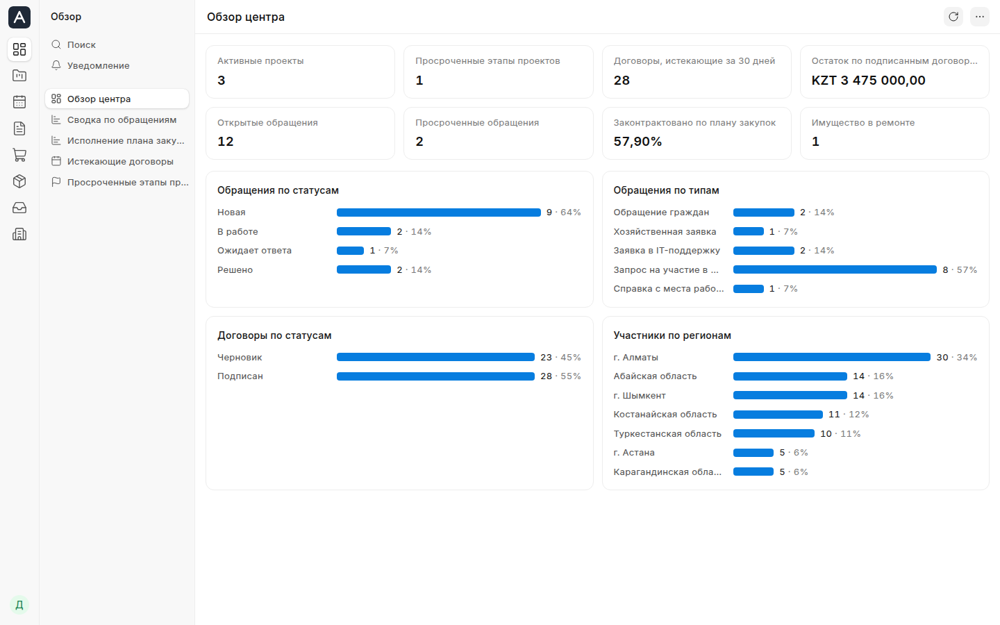

Ұйымның жұмысы — сіздің серверіңіздегі бір жүйеде
Қызметкерлер қазір Excel мен пошта арқылы жүргізетін жұмысын Adapto OS жүйесінде атқара алады. Мұнда жобалармен, шарттармен, іс-шаралармен жұмыс істеп, сатып алу, мүлік және өтініштер есебін жүргізеді. Жүйе тегін, бастапқы коды сізде қалады.
- Қазақ және орыс тілдері
- Интернетсіз жұмыс істейді
- Пайдаланушылар саны шектелмейді

Жүйе тегін. Біз оның айналасындағы жұмыстан табыс табамыз
Лицензияның мерзімі, пайдаланушылар мен серверлер саны шектелмейді. Жүйені өзіңіз өзгерте аласыз немесе кез келген мердігерге тапсыра аласыз. Лицензия сізді бізден қызметтер не жабдық сатып алуға міндеттемейді.
- Оқыту
- Пайдаланушыларға арналған курс бір күнге, әкімшілерге арналған курс үш күнге, әзірлеушілерге арналған курс он күнге созылады.
- Орнату және деректерді көшіру
- Жүйені орнатып, 1С пен Excel-ден анықтамалықтарды, шарттарды және мүлік туралы деректерді көшіреміз.
- Жүйені жетілдіру
- Жүйені жұмыс тәртібіңізге бейімдейміз. Төлем жұмыс сағатына қарай есептеледі. Өзгерістер басқа ұйымдарға да қажет болса, оларды жалпы нұсқаға қосамыз.
- Сервер
- Ұйымыңызда сервер болмаса, жүйе орнатылған сервер жеткіземіз.
Алғашқы нұсқа ғылыми және әдістемелік орталықтарға арналған
Бұл нұсқаны оқу-ағарту, ғылым, еңбек министрліктері мен ТЖМ жанындағы орталықтарға арнап әзірледік. Олардың міндеттері мен есеп жүргізу нысандары ұқсас.
- Мемлекеттік тапсырма және жобалар
- Жоспарлар, кезеңдер, орындаушылар, есептер. Кезеңнің аяқталуына бір апта қалғанда жүйе орындаушыға еске салу хабарламасын жібереді.
- Іс-шаралар және қатысушылар
- Конкурстар, олимпиадалар, курстар. Қатысушылар орталықтың сайтындағы нысанды толтырып тіркеледі.
- Шарттар
- Шарттар тізілімі, белгіленген маршрут бойынша келісу, төлем кестесі, NCALayer арқылы ЭЦҚ-мен қол қою.
- Сатып алу
- Әр жолында ТЖҚ БНА коды көрсетілген жылдық жоспар. Шартқа қол қойылғаннан кейін жүйе жоспардың тиісті жолын жауып, үнемделген соманы көрсетеді.
- Мүлік және жөндеу
- Негізгі құралдардың карточкалары, мүлікті ауыстыру, жөндеу, түгендеу.
- Өтініштер
- Өтініштер сайттан және пошта арқылы түседі. Жүйе жауап беру мерзімін Қазақстандағы мерекелерді ескеріп, жұмыс күндерімен есептейді.
Бухгалтерлік есеп, құжат айналымы және кадрлық есеп қолданыстағы жүйелерде қалады
Бухгалтерлік есеп, жалақы есептеу, кадрлық есеп және ресми құжат айналымы үшін сізде 1С, электрондық құжат айналымы жүйесі және Бірыңғай кадрлық жүйе бар. Adapto OS олардың орнын алмастырмайды. Қызметкерлер қазір кестелер мен хат алмасу арқылы жүргізетін жұмысын осы жүйеде атқарады.
IT бөліміне
- Орнату
- Жүйені өз серверіңізге интернетсіз, бір пәрменмен орната аласыз. Таза серверге орнату шамамен екі минутқа созылады.
- Жаңарту
- Жаңартуларды тоқсанына бір рет шығарамыз. Оларды бір пәрменмен орнатуға болады. Соңғы екі нұсқаға қолдау көрсетеміз.
- Резервтік көшірмелер
- Әр түні, сонымен қатар кесте бойынша желілік қалтаға көшірме. Деректерді нұсқаулық бойынша біздің көмегімізсіз қалпына келтіре аласыз.
- Кіру және қол жеткізу құқықтары
- Жүйеге құпиясөзбен немесе AD/LDAP есептік жазбасы арқылы кіруге болады. Рөлдер лауазымға сәйкес беріледі, әрекеттер журналға жазылады.
- Жылдамдық
- Интерфейстегі кез келген әрекет 0,4 секундтан аз уақытта орындалады.
- Деректер
- Деректер сізде қалады. Жүйе телеметрия жинамайды және бізге деректер жібермейді.
- Технологиялар
- Frappe Framework және PostgreSQL. Бастапқы код сізде.
Жүйенің жұмысымен танысыңыз
Демоға басшы, іс-шаралар үйлестірушісі немесе орындаушы ретінде кіріп, жұмыс барысын басынан аяғына дейін байқап көріңіз. Ондағы деректер ойдан алынған.